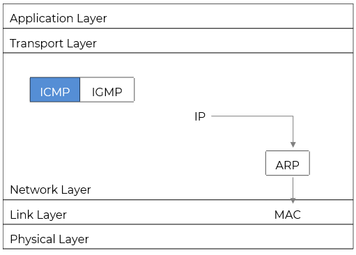
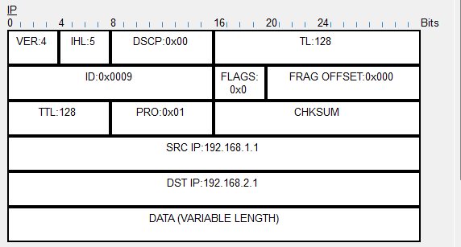
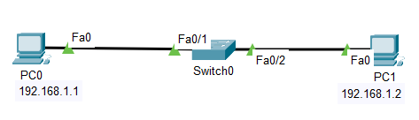
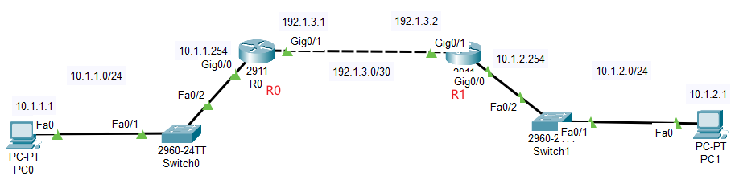

互联网控制消息协议
@ICMP- ICMP - Internet Control Message Protocol
- 整个网际协议 IP 的一个组成部分
- 虽然它不传输用户数据，但为网络的正常运行、故障排查和性能优化提供了关键支持
- 是网络通信中不可或缺的信使
- 是很多网络诊断工具的基础
- ICMP不提供可靠传输机制，无确认、重传机制
- 某些ICMP报文（如Ping）可能被防火墙过滤，以防止探测攻击
- ICMP 报文加上 IP 首部构成 IP 数据报
- 协议号 Protocol 为 1

报文格式 Format
- 类型 Type
- 8 bits
- 报文的功能；差错报告报文和询问报文
0：回显应答 Echo Reply
3：终点不可达 unreachable → 通知源点
5：重定向 Redirect → 通知源点
8：回显请求 Echo Request
11：路由超时 Time Exceeded → 丢弃并通知源点
12：参数错误 Parameter Problem → 丢弃并通知源点
- 代码 Code
- 8 bits
- 进一步对 Type 补充说明，提供更具体的错误或状态信息
- Type = 3（Destination Unreachable）时，Code 可以是：
0：网络不可达
1：主机不可达
2：协议不可达
3：端口不可达
4：需要分片，但是设置为禁止分片 DF=1
- 校验和 CHECKSUM
- 16 bits
-
用于检测 ICMP 报文在传输过程中是否发生错误
计算方式：对整个 ICMP 报文（包括头部和数据）进行反码求和（One's Complement Sum）
发送方计算并填入，接收方重新计算验证
若校验失败，丢弃该报文
- 标识 ID
- 16 bits
-
用于标识一个特定的进程或会话
在 Echo Request/Reply 中，发送方设置 ID，接收方原样返回
通常由应用程序设定（如 Ping 程序使用进程ID或随机数）
有助于区分来自不同应用的 ICMP 报文
若用户同时运行两个 Ping 命令，ID 可帮助区分它们的响应
- 序列号 SEQ NUMBER
- 16 bits
-
用于跟踪连续的 Echo 请求
每次发送新的 Echo Request 时，序列号递增 - 模加1
接收方返回相同的序号，便于确认是否收到所有包
帮助检测丢包或乱序
Ping 的4个探测，ID 相同；SEQ 递增
并非所有 ICMP 报文都有 ID 和 SEQ NUMBER，仅 Echo 类报文有
- 数据 Data
- 可变长度
-
携带实际的数据内容
对于 Echo Request/Reply，通常是任意数据（如时间戳、填充字节等），用于测试往返延迟
对于其他 ICMP 报文（如Destination Unreachable），Data 部分可能包含引发错误的原始 IP 报文的头部（最多64byte）
- 典型应用 Application
|
07 |
815 |
1631 |
|---|---|---|
| Type | Code | CHECKSUM |
| ID | SEQ NUMBER | |
| Data | ||



实操 Drill
- ICMP报文分析
- 搭建拓扑
- 配置主机 IP 地址 - 见拓扑图
- 切换至 Simulation 模式，编辑过滤器 Edit Filters，仅保留 ICMP 协议
- 单击主机 PC0，打开桌面 desktop →命令行 Command Prompt，执行下面命令
- 点击 "Capture / Forward" 按钮，逐步推进事件，并查看报文中的 ICMP 参数变化
发送报文
回复报文
SEQ
ID
- 第2次探测
SEQ
ID
- 4次探测完毕后，再次执行命令
ID
SEQ

ping 192.168.1.2
Summary & Homework
- Summary
- ICMP 在协议栈中的位置和作用
- ICMP 的报文格式
- ICMP 的基本应用
- Homework
- 结合 Ping，简述 ICMP 报文中，ID 和 SEQ 的作用和变化
- 分别使用静态路由和默认路由，实现两侧主机的通信；网络拓扑参考如下
创建拓扑
配置 IP 地址
配置静态路由
利用 Ping 测试网络的连通性，并分析可能出现的问题
删除配置的静态路由；重新配置默认路由
利用 Ping 测试网络的连通性，并分析可能出现的问题
- Reading
